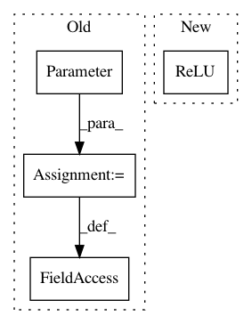

a049ecb81701dd61744cbbf5922c4dc2ee6542fa,ch07/lib/dqn_model.py,NoisyFactorizedLinear,__init__,#NoisyFactorizedLinear#Any#Any#Any#Any#,40
Before Change
def __init__(self, in_features, out_features, sigma_zero=0.4, bias=True):
super(NoisyFactorizedLinear, self).__init__(in_features, out_features, bias=bias)
sigma_init = sigma_zero / math.sqrt(in_features)
self.sigma_weight = nn.Parameter(torch.Tensor(out_features, in_features).fill_(sigma_init))
self.register_buffer("epsilon_input", torch.zeros(1, in_features))
self.register_buffer("epsilon_output", torch.zeros(out_features, 1))
if bias:
self.sigma_bias = nn.Parameter(torch.Tensor(out_features).fill_(sigma_init))
After Change
nn.Conv2d(input_shape[0], 32, kernel_size=8, stride=4),
nn.ReLU(),
nn.Conv2d(32, 64, kernel_size=4, stride=2),
nn.ReLU(),
nn.Conv2d(64, 64, kernel_size=3, stride=1),
nn.ReLU()
)
In pattern: SUPERPATTERN
Frequency: 3
Non-data size: 4
Instances
Project Name: PacktPublishing/Deep-Reinforcement-Learning-Hands-On
Commit Name: a049ecb81701dd61744cbbf5922c4dc2ee6542fa
Time: 2017-10-28
Author: max.lapan@gmail.com
File Name: ch07/lib/dqn_model.py
Class Name: NoisyFactorizedLinear
Method Name: __init__
Project Name: zhanghang1989/PyTorch-Encoding
Commit Name: 8f8fbb9f6543a4ccaad53923d33647e7138d95ea
Time: 2017-10-15
Author: zhang.hang@rutgers.edu
File Name: experiments/model/mynn.py
Class Name: InstanceNormalization
Method Name: __init__
Project Name: jalola/improved-wgan-pytorch
Commit Name: fc8951bbd36b14099e41fe171ab57e9f3937fe4f
Time: 2018-05-08
Author: waterstorm64@gmail.com
File Name: models/wgan.py
Class Name: LayerNorm
Method Name: __init__